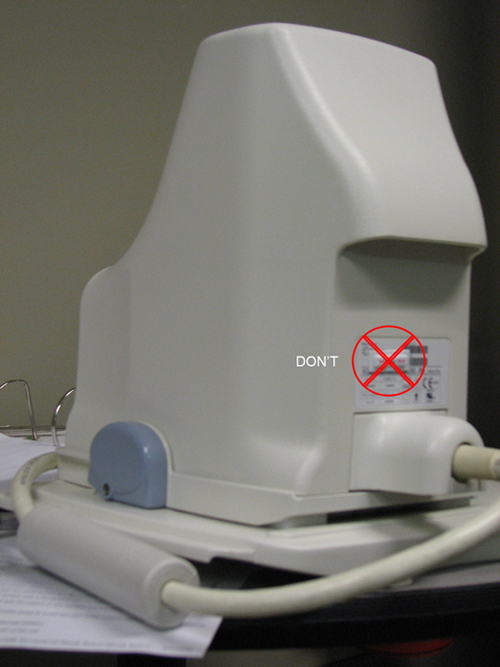

GE Exclusive Use Only
Direction 5670006, Rev# 1
Module Version 10.0, Version Date 10/21/11
GE Exclusive Use Only |
Only one shock sensor should be installed per coil, except for coils that contain two or more pieces that can be stored separately, such as the Torso Coils and Head, Neck, Spine (HNS) Coils. These coils should have a shock sensor located on each of the sections. Refer to the related coil illustration for proper placement.
Check the tables below to determine which shock sensor (75G or 100G) should be installed on the coil. Make sure to install the correct shock sensor.
Remove the adhesive backing on the shock sensor. If necessary, clean the surface of the coil with alcohol before applying the shock sensor. Place the shock sensor on the coil based on the location shown in the illustrations below for each type of coil.
Follow these guidelines for proper placement of the shock sensor on a coil:
Shock sensor should be placed on a hard surface for proper adhesion.
Shock sensor should not be placed on or near anything that might resemble a handle to ensure that it does not interfere with the lifting or positioning of the coil.
Shock sensor should come in full contact with a flat surface with no edges hanging off the coil.
Illustration 27: Avoid Sensor Placement Off Coil Edge

Shock sensor should be kept away from patient-accessible areas to avoid any part of the patient rubbing against the edges of the shock sensor.
Shock sensor should not come in contact with the patient or any surface the patient will come in direct contact with during scanning.
Shock sensor should be visible, but in a discreet location.
Shock sensor should not be installed to any surface inside of the coil.
Shock sensor should not cover an existing label.
Illustration 28: Avoid Installing Sensor Over an Existing Label

Shock sensor should not be placed on the bottom surface of the coil or a surface that comes in contact with the patient table and/or Low Profile Carriage Assembly (LPCA).
Illustration 29: Avoid Sensor Placement on Coil Bottom Surface

Shock sensor should only be installed on the coil housing that contains the coil elements, not on separate, removable pieces or extensions of the coil. As an example, do not place the shock sensor on a mirror, cable or quick disconnect/connector, or on the baseplate of a coil.
Illustration 30: Avoid Sensor Placement on Separate Pieces or Coil Extensions

Return the coils for use to the customer.
Reuse the original packaging of the coil shock sensor for transportation.
Order a new box of shock sensor stickers through Coakley if running low. Order stickers a couple of weeks ahead of the next PM to allow ample time for delivery.